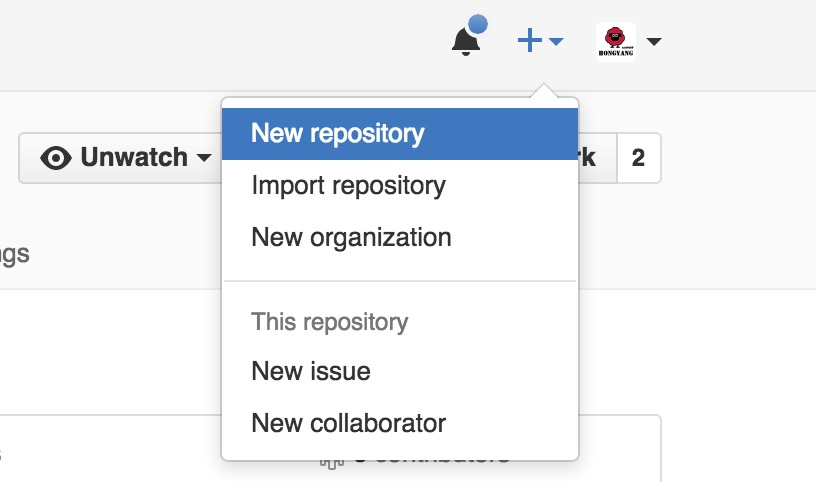
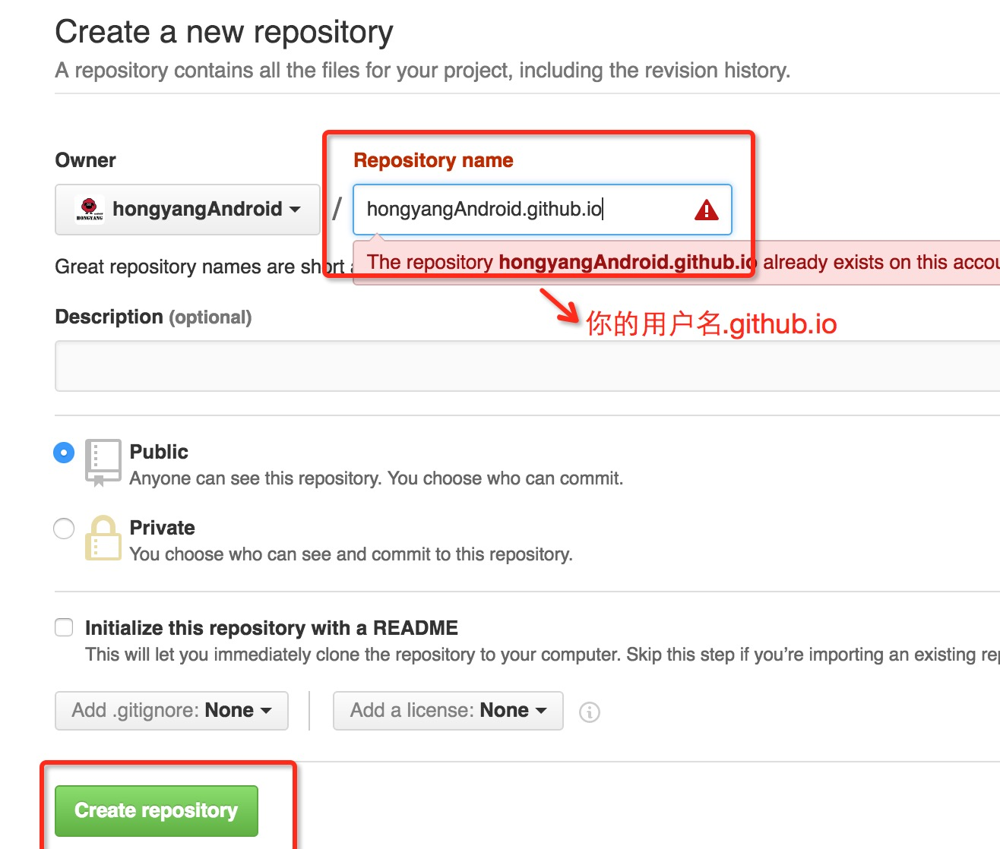
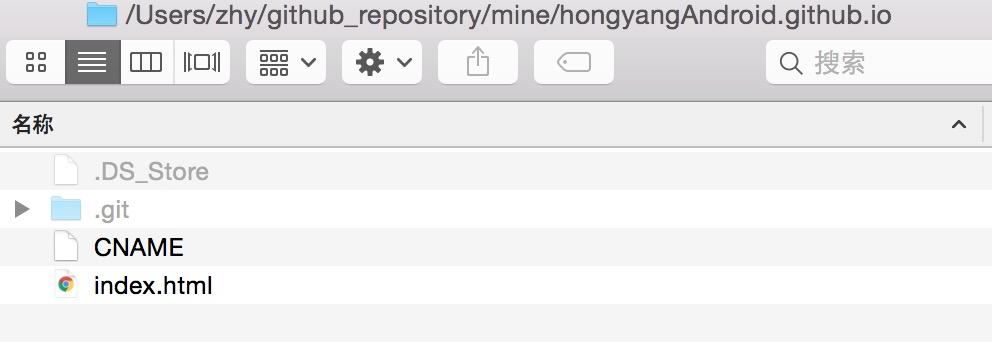
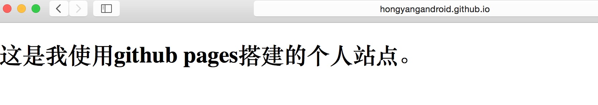
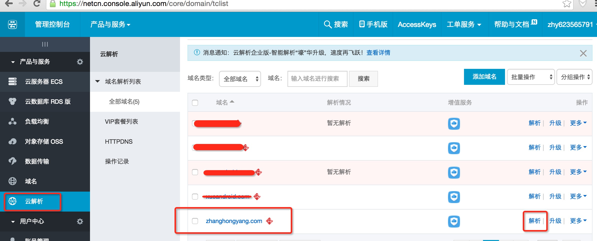
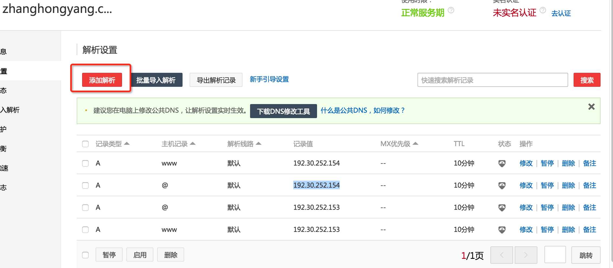
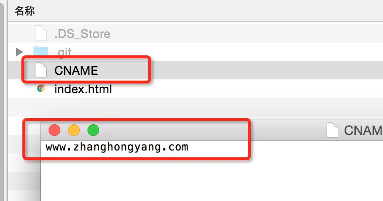
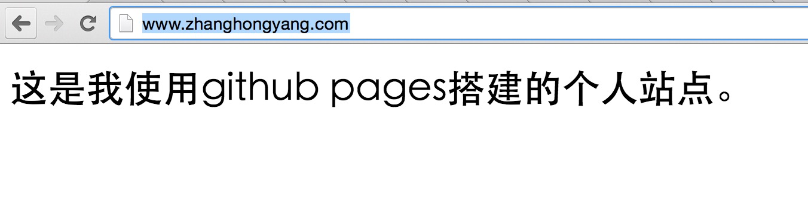

目录视图
目录视图 摘要视图
摘要视图 订阅
订阅版权声明：本文为博主原创文章，未经博主允许不得转载。
转载请标明出处：
http://blog.csdn.net/lmj623565791/article/details/51319147；
本文出自:【张鸿洋的博客】
一、概述
哈，本篇博客不属于Android技术类的文章，但却有非常高的实用性。如果你心细的话，你会发现现在访问zhanghongyang.com或者guolin.tech你会发现最终跳转的是我们的csdn博客的列表目录。
有人会说，这个简单哇，买个域名，设置下域名解析不就好了么？
这样是不行的，关键在于我的博客站点是csdn所提供的，归属于csdn的blog子域名下，但是在设置域名解析的时候只能填写ip，如果你ping 我的博客地址最终得到的ip可能是csdn某台服务器的甚至是拿不到的，所以光填写ip是不行的，不过如果你是自己搭建的服务器站点就可以简单设置解析ip就可以了。
ok，但是大多数人可能还我一样并没有足够的精力去维护个人博客站点，而选择csdn、简书、博客园等平台编写博客。但是这类平台所提供的url想必是非常长的，例如我的：
一般人太难记住了，所以我希望买一个好记的域名
- zhanghongyang.com（张鸿洋.com）
这样大家一眼就能记住，一眼不够两眼肯定没问题。
ok，那么针对我这样的问题，有什么好的且免费的方案呢？
这个问题，郭神和我在dota群里讨论过，最终的方案有两个选择：
- 买个服务器，搭建个服务做页面跳转（redirect或者js跳转）.
- 利用github提供的
github pages
方案1我是不会选的，因为租服务器这种事情要钱哇；最终选择了方案二，利用github pages。
很多人可能并不清楚github pages是干嘛的，官网是：https://pages.github.com/，其实算github提供的一个服务，我们可以免费的再其上面搭建自己的网站，也有很多人利用github pages作为自己的个人博客站点。
接下来，我们就看github pages如何使用，以及我是如何利用它做页面跳转的。
那么，通过本文的学习，你也可以利用github pages搭建一个小站点，构建属于自己的网站，或者使用github pages维护个人博客都可以。
这里感谢郭神，该方案虽然一起讨论得出，但是对该方案的实施是在我之前的，此外大家可以关注他的博客。
二、Github Pages的使用
（1）新建仓库
ok，首先你需要一个github的账号，立志作为一名优秀的程序员，这个账号是应该有的，如果没有赶快申请一个。
有了账号以后，首先点击新建仓库，如图：

然后到达仓库信息填写界面，如图：

这里只要注意一个地方，就是仓库的名称，必须是：你的用户名.github.io，例如我的用户名是hongyangAndroid，我填写的仓库名称即为：hongyangAndroid.github.io。
（2）更新内容
有了仓库以后，你就可以去随意的更新内容了，如果你对html熟悉，你可以随便写个页面提交上去，比如我写个简单的html页面。
先简单说一下如果更新github仓库中的内容：
clone到本地命令行进入硬盘上任意一个文件夹，然后执行
git clone https://github.com/hongyangAndroid/hongyangAndroid.github.io.git- 1
- 2
- 1
- 2
注意修改为你的仓库地址，如果你的电脑上并不支持Git命令，你可以搜索
git 安装，先安装好git并配置好环境。

到达本地之后，我们就可以准备好需要更新进去的页面了，比如我新建一个index.html内容如下：
<!DOCTYPE html>
<html>
<body>
<h1>这是我使用github pages搭建的个人站点。</h1>
</body>
</html>- 1
- 2
- 3
- 4
- 5
- 6
- 1
- 2
- 3
- 4
- 5
- 6
完成之后，记得保存，index.html必须和你clone下来的.git文件夹在同一个目录，如图：

完成之后，就是提交了。
/Users/zhy/github_repository/mine/hongyangAndroid.github.io
git add .
git commit -m "更新index.html，编写博文测试"
[master c22f3d4] 更新index.html，编写博文测试
1 file changed, 6 insertions(+), 1 deletion(-)
git push
Username for 'https://github.com': hongyangAndroid
Password for 'https://hongyangAndroid@github.com':
>zhy$
- 1
- 2
- 3
- 4
- 5
- 6
- 7
- 8
- 9
- 10
- 1
- 2
- 3
- 4
- 5
- 6
- 7
- 8
- 9
- 10
注意首先命令行进入你的hongyangAndroid.github.io这个目录，然后依次执行git add . , git commit -m "注释"，git push，然后输入你的用户名，密码即可。
更新成功之后，那就要恭喜你了，你的个人站点搭建成功了。
你肯定又要说，你忽悠谁呢，顶多算你新建了一个仓库，提交了一个html文件而已，这里我要说，No No No，你的个人站点真的搭建好了，你已经可以给你的亲朋好友炫耀了，那么站点总要有个访问的地址吧，不然怎么访问呢？
恩，是的，默认的地址是:
http://hongyangandroid.github.io- 1
- 1
例如我在浏览器访问这个地址：

看到没有，我们刚才编写的简单html文件已经可以通过特定的url访问了，恩，你记得修改为你自己的url。
如果你的html、css、js技术足够好，你完全可以利用这样的方式搭建一个高逼格且实用的个人站点，当然你也可以在上面搭建你的简历，方便打印，不过注意保护个人隐私。
ok，到这里，我们已经教会大家如何利用github pages去搭建个人站点了，哈，免费的个人站点。如果我大学时候知道这个功能，我至少网页设计可以多拿10分，恩，那会我得了90分。
至于这个页面好不好看，看你的才华了；这个页面能干什么，看你的想象了。
ok，经过上面的内容，大家了解了利用github搭建个人站点，以及一些简单git命令的使用，但是我们文章的标题是：如何利用github打造博客专属域名，恩，接下来的标题就是专属域名。
对了，如果你想利用这个做个人博客，以及有很多方便的工具辅助你完成了，例如hexo等，具体自行搜索。
三、打造博客专属域名
（1）域名购买与解析
ok，首先你要有个域名，那么就要去申请域名了，这里我们可以通过万网申请：https://wanwang.aliyun.com/，查找你想申请域名，如果可以买，购买就可以了。
购买域名完成，进入万网的管理控制台：

找到你已经购买的域名，点击解析，进入如下页面：

然后点击添加解析，ip可以跟我填写的一致，当然以防发生变化，你可以ping你的url：
例如：
ping www.hongyangandroid.github.io- 1

- 1
然后拿到返回的这个IP也可以。
恩，根据上表，选择一个IP，填写两条记录其实就可以了：
- 主机记录
www对应www.zhanghongyang.com - 主机记录
@对应zhanghongyang.com
ok，设置完成解析之后，是不是直接访问域名就能跳转到我们刚才的github页面呢？
恩，是不能，你去访问会显示404.
我们还差一个环节。
（2）CNAME
差什么呢，差一个CNAME文件，这个文件需要提交到我们刚才创建的仓库，内容为我们的域名，例如:

然后记得执行：git add . , git commit -m "注释"，git push，然后输入你的用户名，密码即可，忘了命令往前翻。
更新成功之后，检查下，确定成功了，就可以通过你的域名访问了，例如：

ok，到这里你已经学会了如何通过你购买的域名与github pages结合，即通过你购买的域名访问你的个人站点了。
一般情况下，到这里就可以庆祝了，比如你想托管你的简单的网页设置。
但是，如果你和我一样，博客在其他平台下托管，你想通过购买的域名跳转到该平台，你的任务还没结束。
（3）神奇的JS
好吧，其实一点也不神奇，也就一行js跳转代码。
对于我这种情况，我不需要任何内容，只要一行js就好了，我可以这么写index.html：
<!DOCTYPE html>
<html>
<script>
window.location.href="http://blog.csdn.net/lmj623565791";
</script>
<body>
</body>
</html>- 1
- 2
- 3
- 4
- 5
- 6
- 7
- 8
- 9
- 10
- 1
- 2
- 3
- 4
- 5
- 6
- 7
- 8
- 9
- 10
然后我提交就搞定了，我就可以通过zhanghongyang.com直接跳转到我的博客页面了。
but，心细的人并没有满足，比如我们手机访问的csdn列表页面和电脑的列表页面不同的，于是我们可以更加完善我们的js代码：
<script>
function browserRedirect() {
var sUserAgent = navigator.userAgent.toLowerCase();
var bIsIpad = sUserAgent.match(/ipad/i) == "ipad";
var bIsIphoneOs = sUserAgent.match(/iphone os/i) == "iphone os";
var bIsMidp = sUserAgent.match(/midp/i) == "midp";
var bIsUc7 = sUserAgent.match(/rv:1.2.3.4/i) == "rv:1.2.3.4";
var bIsUc = sUserAgent.match(/ucweb/i) == "ucweb";
var bIsAndroid = sUserAgent.match(/android/i) == "android";
var bIsCE = sUserAgent.match(/windows ce/i) == "windows ce";
var bIsWM = sUserAgent.match(/windows mobile/i) == "windows mobile";
if (!(bIsIpad || bIsIphoneOs || bIsMidp || bIsUc7 || bIsUc || bIsAndroid || bIsCE || bIsWM) ){
window.location.href="http://blog.csdn.net/lmj623565791";
} else {
window.location.href="http://m.blog.csdn.net/blog/index?username=lmj623565791";
}
}
browserRedirect();
</script>- 1
- 2
- 3
- 4
- 5
- 6
- 7
- 8
- 9
- 10
- 11
- 12
- 13
- 14
- 15
- 16
- 17
- 18
- 19
- 1
- 2
- 3
- 4
- 5
- 6
- 7
- 8
- 9
- 10
- 11
- 12
- 13
- 14
- 15
- 16
- 17
- 18
- 19
通过判断userAgent来确定是否是来自手机端的，如果是手机端的访问mobile的页面，否则访问pc端页面。这么心细也就没谁了，该代码是郭神编写的。
ok，到此就真的结束了~~
文章不长，但是值得玩一下，你可以设计个贺卡，做个网页版ppt，托管个网站原型，恩，甚至编写博客（记得利用各种工具hexo等），好了，看你的脑洞了~~
欢迎关注我的微博：
http://weibo.com/u/3165018720
群号：535687182，欢迎入群
微信公众号：hongyangAndroid
（欢迎关注，本公众号已经开通投稿功能，欢迎联系我）
- 顶
- 33
- 踩
- 3
我的同类文章
- •巧用ViewPager 打造不一样的广告轮播切换效果2016-05-09
- •Android 不规则封闭区域填充 手指秒变油漆桶2015-05-25
- •Android FoldingLayout 折叠布局 原理及实现（二）2015-03-19
- •Android 自定义控件玩转字体变色 打造炫酷ViewPager指示器2015-03-09
- •Android 打造形形色色的进度条 实现可以如此简单2015-02-02
- •Android 高清加载巨图方案 拒绝压缩图片2015-10-21
- •Android 不规则图像填充 小玩着色游戏2015-05-18
- •Android FoldingLayout 折叠布局 原理及实现（一）2015-03-16
- •Android 自定义控件 轻松实现360软件详情页2015-02-09
- •Android 打造炫目的圆形菜单 秒秒钟高仿建行圆形菜单2015-01-29
参考知识库


- 猜你在找


Your site is published at https://alienandroid.github.io/ 但是打开还是404啊，邮箱也验证了
remote:invalid username or password.
fatal: authentication failed for 'https://github.com/namelijun/namelijun.githun.io.git/'
www.liaoinstan.com
1、github上创建Repository时，为什么一定用”你的用名.github.io“格式,且得到的访问地址只能是http://,不能是www 格式。这是和github访问机制的有关吗？
2、在csdn pc端网址和手机端网址是怎样转换的
我按照您的格式转换，手机端网址都自动跳转到这个地址：http://m.blog.csdn.net/home/index
http://wsgzao.github.io/post/hexo-guide/